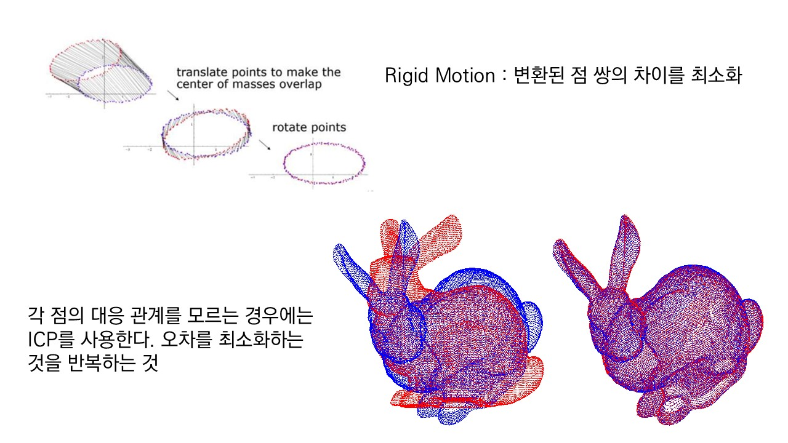

3. ICP 정합 알고리즘으로 자세 구하기
ICP(Iterative Closest Point) 정합 알고리즘을 이용해 관측된 포인트 클라우드를 정답 3D 모델에 정렬시켜 카메라 기준의 변환 행렬을 도출합니다.
📖 이론 설명

📌 주요 함수 레퍼런스
| 함수 | 역할 | 공식 문서 |
|---|---|---|
| o3d.pipelines.registration.registration_icp | ICP 기반 포인트 클라우드 정합 | Link |
📝 실습 TODO 워크플로
0~2
전처리 과정 (제공됨)
정답 모델 생성, 깊이 이미지에서 클라우드 계산, RANSAC 기반 배경(바닥) 평면 제거
3-1
포인트 클라우드 군집화 (TODO)
— 배경이 제거된 구름에서 DBSCAN을 사용해 나무 블록만 군집화하여 추출합니다.
3-2
주축(Principal Axis) 추정 (TODO)
— PCA를 이용해 추출된 나무 블록의 주축 벡터를 계산합니다.
4-1
초기 정렬 매트릭스 생성 (TODO)
— 계산된 주축과 무게중심을 바탕으로 ICP의 초기값(init_transform)을 구성합니다.
4-2
ICP 정합 실행 및 추출 (TODO)
— registration_icp() 함수를 실행하고 최종 회전/위치 값을 추출합니다.
5
역투영 및 시각화 (제공됨)
구해진 축과 위치값을 RGB 이미지 상에 텍스트 및 축으로 투영해 그립니다.
✨ 예상 실행 결과

💻 노트북 뼈대 코드 보기
import cv2
import numpy as np
import open3d as o3d
import matplotlib.pyplot as plt
# ==========================================
# 0~2. 전처리 과정 (제공됨)
# ==========================================
def create_point_cloud_from_depth(depth_img, camera_matrix):
h, w = depth_img.shape
fx, fy = camera_matrix[0, 0], camera_matrix[1, 1]
cx, cy = camera_matrix[0, 2], camera_matrix[1, 2]
u, v = np.meshgrid(np.arange(w), np.arange(h))
valid = depth_img > 0
z = depth_img[valid]
x = (u[valid] - cx) * z / fx
y = (v[valid] - cy) * z / fy
return np.vstack((x, y, z)).T
# 카메라 파라미터 및 이미지 로드
fx, fy = 910.72, 910.86
cx, cy = 634.24, 355.96
camera_matrix = np.array([[fx, 0, cx], [0, fy, cy], [0, 0, 1]], dtype=np.float32)
depth_img = cv2.imread('block_d.png', cv2.IMREAD_UNCHANGED)
rgb_img = cv2.imread('block_rgb.png')
rgb_img = cv2.cvtColor(rgb_img, cv2.COLOR_BGR2RGB)
# 1. 정답 모델(Target) 생성 (중심을 원점으로 맞춤)
target_mesh = o3d.geometry.TriangleMesh.create_box(width=60, height=60, depth=100)
target_mesh.translate((-30, -30, -50)) # 무게중심을 (0,0,0)으로 이동
target_pcd = target_mesh.sample_points_uniformly(number_of_points=5000)
# 2. 깊이 이미지 -> 포인트 클라우드 변환
points = create_point_cloud_from_depth(depth_img, camera_matrix)
source_pcd = o3d.geometry.PointCloud()
source_pcd.points = o3d.utility.Vector3dVector(points)
# 3. RANSAC 기반 배경(바닥) 평면 제거
source_pcd = source_pcd.voxel_down_sample(voxel_size=2.0)
plane_model, inliers = source_pcd.segment_plane(distance_threshold=5.0, ransac_n=3, num_iterations=1000)
# inliers(바닥)를 제외한 나머지(나무 블록+노이즈)만 추출
outlier_cloud = source_pcd.select_by_index(inliers, invert=True)
# ==========================================
# TODO 3-1: 포인트 클라우드 군집화 (DBSCAN)
# ==========================================
# outlier_cloud에서 cluster_dbscan을 사용하여 군집화합니다. (eps=10.0, min_points=20)
# 가장 점이 많은 군집(노이즈 -1 제외)의 인덱스를 찾아 block_pcd로 추출하세요.
labels = None
# 가장 큰 군집 번호 찾기 및 추출 로직 작성
block_pcd = None
# ==========================================
# TODO 3-2: 주축(Principal Axis) 추정 (PCA)
# ==========================================
# block_pcd의 점들을 numpy 배열로 변환한 후, 무게중심(mean)과 공분산 행렬(covariance)을 구하세요.
# 고윳값 분해(np.linalg.eigh)를 통해 주축 벡터(Eigenvectors)를 계산하세요.
pts = None
mean = None
cov = None
eigenvalues, eigenvectors = None, None
# 좌표계 우수계(Right-handed) 정렬 확인 로직 (작성 완료 시 주석 해제)
# if np.linalg.det(eigenvectors) < 0:
# eigenvectors[:, 2] = -eigenvectors[:, 2]
# ==========================================
# TODO 4-1: 초기 정렬 매트릭스 생성
# ==========================================
# 계산된 eigenvectors를 회전(Rotation)으로, mean을 이동(Translation)으로 하는
# 4x4 형태의 초기 변환 행렬(init_transform)을 생성하세요.
init_transform = None
# ==========================================
# TODO 4-2: ICP 정합 실행 및 추출
# ==========================================
# o3d.pipelines.registration.registration_icp를 실행하여 타겟 모델을 블록에 맞춥니다.
# (threshold=10.0, init_transform 적용)
# 완료 후 최종 변환 행렬에서 회전 행렬(R)과 이동 벡터(tvec)를 추출하세요.
icp_result = None
R = None
tvec = None
# ==========================================
# 5. 역투영 및 시각화 (제공됨)
# ==========================================
if R is not None and tvec is not None:
# 회전 행렬을 회전 벡터(rvec)로 변환
rvec, _ = cv2.Rodrigues(R)
dist_coeffs = np.zeros((4,1))
# RGB 이미지에 3D 축 투영 (축 길이 50mm)
img_projected = rgb_img.copy()
cv2.drawFrameAxes(img_projected, camera_matrix, dist_coeffs, rvec, tvec, 50, 3)
# 텍스트 출력
distance = np.linalg.norm(tvec)
cv2.putText(img_projected, f"Dist: {distance:.1f}mm", (20, 40),
cv2.FONT_HERSHEY_SIMPLEX, 1, (0, 255, 0), 2)
plt.figure(figsize=(10, 8))
plt.imshow(img_projected)
plt.title('Step 5: Reprojection & Axes (ICP Result)')
plt.axis('off')
plt.show()
else:
print("▶ TODO 항목들을 완성하면 RGB 역투영 시각화가 출력됩니다.")✅ 정답 예시 확인하기
import cv2
import numpy as np
import open3d as o3d
import matplotlib.pyplot as plt
# ==========================================
# 0~2. 전처리 과정 (제공됨)
# ==========================================
def create_point_cloud_from_depth(depth_img, camera_matrix):
h, w = depth_img.shape
fx, fy = camera_matrix[0, 0], camera_matrix[1, 1]
cx, cy = camera_matrix[0, 2], camera_matrix[1, 2]
u, v = np.meshgrid(np.arange(w), np.arange(h))
valid = depth_img > 0
z = depth_img[valid]
x = (u[valid] - cx) * z / fx
y = (v[valid] - cy) * z / fy
return np.vstack((x, y, z)).T
fx, fy = 910.72, 910.86
cx, cy = 634.24, 355.96
camera_matrix = np.array([[fx, 0, cx], [0, fy, cy], [0, 0, 1]], dtype=np.float32)
depth_img = cv2.imread('block_d.png', cv2.IMREAD_UNCHANGED)
rgb_img = cv2.imread('block_rgb.png')
rgb_img = cv2.cvtColor(rgb_img, cv2.COLOR_BGR2RGB)
target_mesh = o3d.geometry.TriangleMesh.create_box(width=60, height=60, depth=100)
target_mesh.translate((-30, -30, -50))
target_pcd = target_mesh.sample_points_uniformly(number_of_points=5000)
points = create_point_cloud_from_depth(depth_img, camera_matrix)
source_pcd = o3d.geometry.PointCloud()
source_pcd.points = o3d.utility.Vector3dVector(points)
source_pcd = source_pcd.voxel_down_sample(voxel_size=2.0)
plane_model, inliers = source_pcd.segment_plane(distance_threshold=5.0, ransac_n=3, num_iterations=1000)
outlier_cloud = source_pcd.select_by_index(inliers, invert=True)
# ==========================================
# 3-1: 포인트 클라우드 군집화 (DBSCAN)
# ==========================================
labels = np.array(outlier_cloud.cluster_dbscan(eps=10.0, min_points=20, print_progress=False))
# -1(노이즈)을 제외하고 가장 점이 많은 군집 찾기
unique_labels, counts = np.unique(labels[labels >= 0], return_counts=True)
best_label = unique_labels[np.argmax(counts)]
# 나무 블록에 해당하는 점들만 추출
block_indices = np.where(labels == best_label)[0]
block_pcd = outlier_cloud.select_by_index(block_indices)
# ==========================================
# 3-2: 주축(Principal Axis) 추정 (PCA)
# ==========================================
pts = np.asarray(block_pcd.points)
mean = np.mean(pts, axis=0) # 무게중심
# 공분산 행렬 계산 및 고윳값 분해
centered_pts = pts - mean
cov = np.cov(centered_pts, rowvar=False)
eigenvalues, eigenvectors = np.linalg.eigh(cov)
# 회전 행렬의 조건(det(R) = 1)을 만족시키기 위해 우수계 확인
if np.linalg.det(eigenvectors) < 0:
eigenvectors[:, 2] = -eigenvectors[:, 2]
# ==========================================
# 4-1: 초기 정렬 매트릭스 생성
# ==========================================
init_transform = np.eye(4)
init_transform[:3, :3] = eigenvectors # 주축을 회전 행렬로 사용
init_transform[:3, 3] = mean # 무게중심을 이동 벡터로 사용
# ==========================================
# 4-2: ICP 정합 실행 및 추출
# ==========================================
threshold = 10.0
icp_result = o3d.pipelines.registration.registration_icp(
target_pcd, block_pcd, threshold, init_transform,
o3d.pipelines.registration.TransformationEstimationPointToPoint(),
o3d.pipelines.registration.ICPConvergenceCriteria(max_iteration=2000)
)
# 최종 4x4 행렬에서 R, t 분리
final_transform = icp_result.transformation
R = final_transform[:3, :3]
tvec = final_transform[:3, 3]
print("=== ICP Result ===")
print("Fitness:", icp_result.fitness)
print("RMSE:", icp_result.inlier_rmse)
# ==========================================
# 5. 역투영 및 시각화 (제공됨)
# ==========================================
rvec, _ = cv2.Rodrigues(R)
dist_coeffs = np.zeros((4,1))
img_projected = rgb_img.copy()
cv2.drawFrameAxes(img_projected, camera_matrix, dist_coeffs, rvec, tvec, 50, 3)
distance = np.linalg.norm(tvec)
cv2.putText(img_projected, f"Dist: {distance:.1f}mm", (20, 40),
cv2.FONT_HERSHEY_SIMPLEX, 1, (0, 255, 0), 2)
plt.figure(figsize=(10, 8))
plt.imshow(img_projected)
plt.title('Step 5: Reprojection & Axes (ICP Result)')
plt.axis('off')
plt.show()